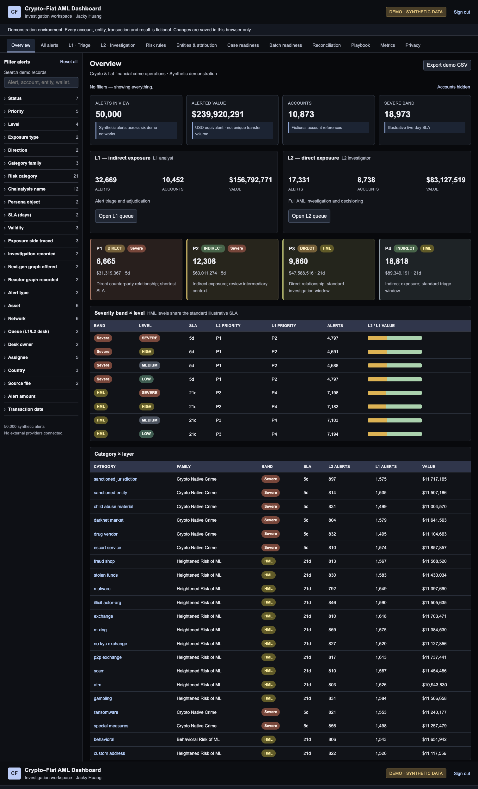

Crypto–Fiat AML Dashboard
Full overview of 50,000 synthetic alerts. Compare L1 and L2 queues, priority bands and risk categories in this saved demo.
Open original-size overview
Full overview of 50,000 synthetic alerts. Compare L1 and L2 queues, priority bands and risk categories in this saved demo.
Open original-size overview